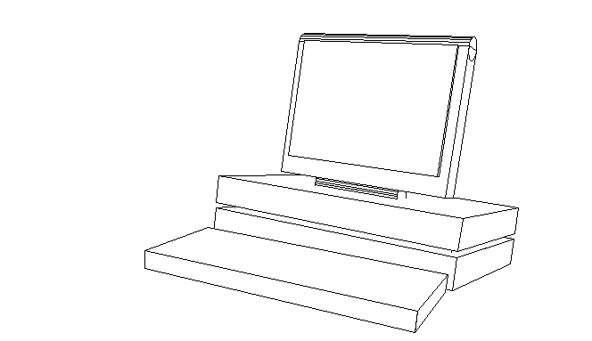

ostrich
ostrich is a 3D engine and custom language interprer I created for December Adventure 2023. It is inspired by moogle and pinhole, and features:
- 3D rotation and translation
- Variable focal length
- Back-face culling
- Frustum clipping
- Frustum culling
- Hidden-line removal (slow)
- Image export
- Model generation using a custom scripting language
Example

This image was generated by the following script:
3 20 50 prism
0 90 0 rotate
0 38 3 translate
50 38 6 box
merge
0 17 0 translate
45 33 1 box
2.5 22 -1 translate
merge
3 30 25 prism
0 90 0 rotate
13 16 3 translate
merge
3 0 0 rotate
0 2 -10 translate
64 7.5 40 box
-7 5 -20 translate
70 7.5 50 box
-10 0 -25 translate
clone
0 9 0 translate
merge
merge
merge
25 60 4 box
90 90 0 rotate
-6 8 0 rotate
-11 5 -33 translate
merge
(exported and colorized using GIMP)
Source code available on GitHub